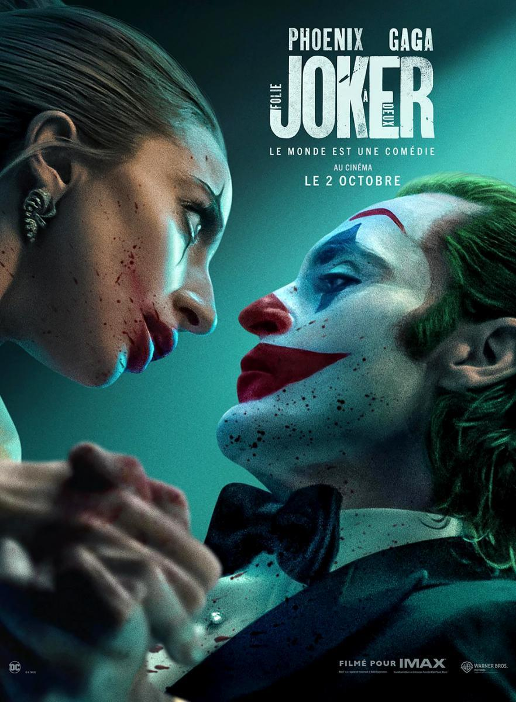

Joy
El nacimiento de Louise Joy Brown, la primera “niña probeta” en 1978, marcó un hito en la medicina.
La
historia se narra desde Jean Purdy, embrióloga que junto a Robert Edwards y Patrick Steptoe
desarrolló
la fertilización in vitro (FIV). Este equipo enfrentó grandes desafíos para vencer la infertilidad.
Su
logro dio esperanza a millones de personas.
Drama, Basado en hechos reales, Medicina, Años 60-70
+7Puntos suspensivos
Leo, un exitoso escritor que firma como Cameron Graves, se refugia en un chalet para escribir su
nueva
novela. Su aislamiento se quiebra con la llegada de Jota, un enigmático periodista que parece
conocer
más de lo que debería. Con un oscuro secreto vinculado a Adriana, su joven amante, las tensiones
escalan
en un juego de mentiras, traiciones y muerte entre ambos.
Intriga, Thriller, Crimen, Literatura, Escenario único
+12The Piano Lesson
La batalla entre un hermano y una hermana por un preciado piano heredado desata verdades
inquietantes
sobre cómo se percibe el pasado y quién define el legado familiar.
Drama, Familia, Música
+14Bombshell
Deconstrucción de la caída de uno de los imperios mediáticos más poderosos y controvertidos de las
últimas décadas, Fox News, y de cómo un grupo de explosivas mujeres logró acabar con el hombre
responsable de él: Roger Ailes.
Drama, Basado en hechos reales, Abusos sexuales
+12La innocència
Lis, una adolescente que sueña con ser artista de circo y dejar su pueblo, vive un verano entre
juegos con amigas y un romance secreto con su novio mayor. Sin embargo, el constante chismorreo de
los vecinos y el control de sus padres complican su vida. Al llegar el otoño, una noticia inesperada
cambiará su mundo por completo.
Drama, Adolescencia, Familia
+16

Joker: Folie à Deux
Arthur Fleck, internado en Arkham tras los crímenes cometidos como Joker, enfrenta la lucha con su
doble identidad mientras espera juicio. En su encierro, encuentra el amor verdadero y descubre su
pasión por la música, desvelando un nuevo capítulo en su historia. Secuela de Joker (2019).
Thriller, Drama, Romance, Crimen, DC Comics
+17
The Old Man
Serie de TV (2022-). 2 temporadas. 15 episodios. Un antiguo agente de la CIA que vive al margen
de la sociedad se encuentra a sí mismo huyendo de gente que quiere matarlo.
Memento Mori
"Versos, canciones y trocitos de carne" es un thriller policíaco que sigue la confrontación
entre un asesino (Yon González) y un policía (Francisco Ortiz). La primera temporada, de 6
episodios, se estrenó en 2023. La serie está basada en la trilogía de César Pérez Gellida. Ha
sido renovada para una segunda temporada de 5 episodios, con rodaje previsto para julio de 2024.
Outlander
Outlander (2014-) es una serie de 7 temporadas que sigue a Claire Randall, una enfermera de
combate casada en los años 40, que es transportada al año 1743. En este nuevo mundo, se ve
atrapada en un triángulo amoroso con dos hombres: su esposo Frank y el guerrero escocés Jamie
Fraser, con quien se ve obligada a casarse. La serie explora su lucha por sobrevivir y encontrar
su lugar en dos épocas distintas.
The Penguin
Miniserie de TV (2024). 1 temporada, 8 episodios. Serie centrada en el personaje de El Pingüino,
de la película 'The Batman' (2022), interpretado por Colin Farrell.
Say Nothing
Miniserie de 9 episodios basada en el libro de Patrick Radden Keefe sobre el IRA en Irlanda del
Norte. Sigue a las hermanas Dolours y Marian Price, criadas en una familia republicana de
Belfast. Influenciadas por su entorno, se unen a la lucha en los años 70. La historia explora la
violencia sectaria y sus efectos personales.
Respira
Serie de 1 temporada y 8 episodios sobre Biel, un residente que se dedica al máximo en un
hospital público. Su vida da un giro cuando estalla una huelga total contra los recortes en la
sanidad. En medio del conflicto, debe decidir entre secundarla o priorizar a los pacientes. La
historia explora los dilemas y sacrificios de médicos jóvenes y veteranos.